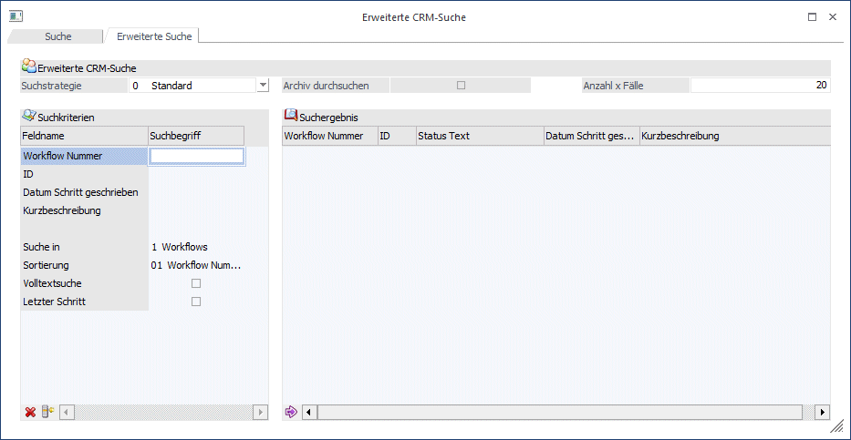
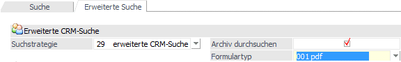
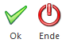

In der erweiterten Suche kann mit so genannten Suchstrategien gearbeitet werden. Als Standardsuchstrategie ist der Eintrag "0 - Standard" vorhanden, welche die Felder "Workflow Nummer", "ID", "Datum Schritt geschrieben" und "Kurzbeschreibung" enthält.

Welche Felder als Suchkriterien zur Verfügung stehen bzw. welche Felder im Suchergebnis angezeigt werden sollen, kann über so genannte Suchstrategien (Vorlagen) festgelegt werden.
Hinweis
Die Suchstrategien werden in WinLine START über "Vorlagen" - "Vorlagen Anlage" unter dem Vorlagentyp "CRM" angelegt.
Die Suchstrategie kann über die Auswahllistbox
Ø Suchstrategie
ausgewählt werden. Wenn eine Suchstrategie ausgewählt und mit Enter bestätigt wurde, dann werden in den Tabellen "Suchkriterien" und "Suchergebnis" die entsprechenden Felder (gemäß Vorlage) angezeigt.
Ø Archiv durchsuchen
Durch Aktivierung der Option "Archiv durchsuchen" wird das Auswahlfeld "Formulartyp" angezeigt. Durch Auswahl eines speziellen Formulartyps wird die darin enthaltene Archiv-Beschlagwortung automatisch als weitere Suchkriterien vorgeschlagen.
Wenn diese neu hinzugekommenen Kriterien für die CRM-Suche genutzt werden, dann wird die Suche im Archiv durchgeführt und alle zu den entsprechenden Archiveinträgen gefundenen CRM-Fälle als Suchergebnis angezeigt.
Hinweis
Der Punkt "Archiv durchsuchen" ist nur aktivierbar, wenn eine "Suchstrategie" ungleich "0 - Standard" gewählt wurde.
Ø Formulartyp
Dieses Feld steht nur zur Verfügung, wenn die Option "Archiv durchsuchen" aktiviert wurde (nähere Informationen siehe bitte auch "Archiv durchsuchen").
Beispiel

Es wurde die zuvor angelegte Suchstrategie "29 - erweiterte CRM-Suche" unter "Suchstrategie" hinterlegt und die Option ""Archiv durchsuchen" aktiviert. In dem erscheinenden Feld "Formulartyp" kann nun ein Formulartyp aus dem Archivbereich gewählt werden.
Ø Anzahl x Fälle
Über dieses Feld kann gesteuert werden, wie viele Fälle max. angezeigt werden sollen. Der Standardvorschlag ist 20 Fälle.
Zusätzlich zu den eigentlichen Suchkriterien werden in der Suchkriterientabelle folgende Einstellungsmöglichkeiten angeboten:
Ø Suche in
Hier kann festgelegt werden in welchen CRM-Bereichen die Suche stattfinden soll. Folgende Auswahlmöglichkeiten stehen dabei zur Verfügung:
ü 1 - Workflows
ü 2 - Aktionen
ü 3 - Workflows und Aktionen
Ø Sortierung
Die Sortierung der Anzeige in der Tabelle kann nach verschiedenen Kriterien gestaltet werden (z.B. ID, Kundenkonto, etc.). Welche Varianten möglich sind, wird dabei über die gewählte Suchstrategie gesteuert.
Ø Volltextsuche
Standardmäßig erfolgt die Suche linksbündig. Durch Aktivieren der Option "Volltextsuche" wird der Suchbegriff innerhalb des gesamten Wertes gesucht.
Beispiel
Es wird in der Kurzbeschreibung der Suchbegriff "Sport" eingegeben.
ü Erfolgt die Suche ohne Volltext, dann wird der Suchbegriff "Sport%" übergeben.
ü Erfolgt die Suche mit Volltext, dann wird der Suchbegriff "%Sport%" übergeben.
Ø Letzter Schritt
Mit dieser Option kann entschieden werden, ob bei CRM-Workflows nur der letzte Schritt (Eintrag) in der Suchergebnistabelle angezeigt werden soll (Option aktiviert) oder alle erfassten Schritte (Option deaktiviert).
Hinweis
Ist in der erweiterten Suche bei der Option "Archiv durchsuchen" die Checkbox aktiviert, so kann in den Suchkriterien zusätzlich auf Tagesdatum und Arbeitnehmer eingegrenzt werden.
Buttons in der Selektionstabelle
Ø Eingaben verwerfen
Wird dieser Button angeklickt, werden alle vorgenommen Eingaben in der Tabelle mit der Auswahl (gemäß Vorlage) rückgängig gemacht.
Ø Erweitere Selektion
Wird dieser Button angeklickt, dann kann in den Feldern der Tabelle eine zusätzliche Selektion vorgenommen werden, die von der Funktionalität dem Filter ähnelt. Dazu wird die Tabelle etwas breiter gemacht und es stehen zusätzliche Felder zur Verfügung:
Hinweis
Die "erweiterte Selektion" bleibt so lange erhalten, bis die entsprechende Option wieder deaktiviert wird.
Ø Operator
Aus der Auswahllistbox kann zwischen folgenden Operatoren gewählt werden:
|
Operator |
Bezeichnung |
Bedeutung |
|
>< |
Von - Bis |
Der Bereich wird mit einer Unter- und Obergrenze eingeschränkt |
|
= |
Gleich |
Variablen, deren Wert mit der Bedingung genau übereinstimmt. |
|
<> |
Ungleich |
Variablen, deren Wert nicht dieser Bedingung unterliegt |
|
> |
Größer |
Variablen, deren Wert größer ist als jener in der Bedingung |
|
< |
Kleiner |
Variablen, deren Wert kleiner ist als jener in der Bedingung |
|
>= |
GrößerGleich |
Variablen, deren Wert größer ist als jener in der Bedingung oder mindestens gleich |
|
<= |
KleinerGleich |
Variablen, deren Wert kleiner ist als jener in der Bedingung oder höchstens gleich |
|
% |
Wie |
Nur wenn die Bedingung im Wert enthalten ist Beispiel Eingabe "Sport%" Es wird nach allen Werten gesucht, die mit dem Wort "Sport" beginnen
Eingabe "%sport%" |
|
=0 |
IS NULL |
Variablen, deren Wert gleich Null ist (NULL bedeutet, dass das Feld in der Datenbank keinen Wert - auch nicht 0 - enthält). |
|
IN |
manuelle Auflistung |
Mit dieser Funktion kann eine Reihe von Werten abgefragt werden, die nicht unmittelbar hintereinander kommen (im Gegensatz zu von - bis). Damit können z.B. die Artikelgruppen 3, 7 und 12 oder die Kundengruppen 4, 10 und 47 abgefragt werden. Das Trennzeichen für die Werte ist das Semikolon ";". |
Hinweis
Bei der Eigenschaft "Mehrfachauswahl" gibt es folgende Besonderheiten bei den nachfolgenden Operatoren:
ü % - Wie
Es werden alle
CRM-Fälle angezeigt, bei denen einer der ausgewählten Werte zugeordnet
wurde.
Beispiel
In der Mehrfachauswahl-Eigenschaft "Zugehörigkeit zu Produktgruppe" gibt es die definierten Werte "Fahrrad", "Fahrradzubehör", "Camping" und "Campingzubehör".
Bei einer Suche mit dem Operator "% - Wie" und der Auswahl "Fahrrad" und "Campingzubehör" würden alle Kontakte erscheinen, bei denen zumindest "Fahrrad" oder "Campingzubehör" zugeordnet ist.
ü IN - manuelle Auflistung
Es
werden alle CRM-Fälle angezeigt, bei denen alle ausgewählten Werte zugeordnet
wurden. Im Gegensatz zu dem Operator "= - Gleich" dürfen aber zusätzlich noch
weitere Werte bei den CRM-Fällen hinterlegt sein.
Beispiel
In der Mehrfachauswahl-Eigenschaft "Zugehörigkeit zu Produktgruppe" gibt es die definierten Werte "Fahrrad", "Fahrradzubehör", "Camping" und "Campingzubehör".
Bei einer Suche mit dem Operator "IN - Manuelle Auflistung" und der Auswahl "Fahrrad" und "Campingzubehör" würden alle CRM-Fälle erscheinen, bei denen zumindest "Fahrrad" und "Campingzubehör" zugeordnet sind.
Ø Not
Ist diese Checkbox aktiv, dann wird die Bedingung verneint. Das bedeutet, es werden nur Datensätze ausgegeben, die außerhalb des selektierten Bereichs liegen.
Ø Suchbegriff / Suchbegriff 2
In diesen Feldern können die Suchbegriffe gemäß dem Operator eingetragen werden. Der Suchbegriff 2 steht nur beim Operator "Von - Bis" zur Verfügung.
Buttons in Suchergebnistabelle
Ø in Merkliste
Durch Anklicken dieses Buttons können alle selektierten (markierten) Fälle (=Zeilen) aus der Tabelle in eine Merkliste / Kampagne übergeben werden.
Buttons

Ø OK
Nach Eingabe der gewünschten Suchbegriffe wird die Suchfunktion durch Anklicken des OK-Buttons gestartet (Taste F5).
Ø Ende
Durch Anwählen dieses Buttons wird der Menüpunkt geschlossen.